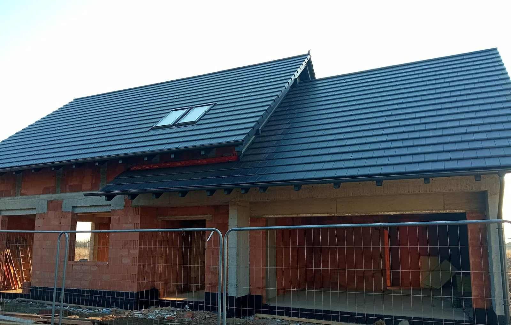
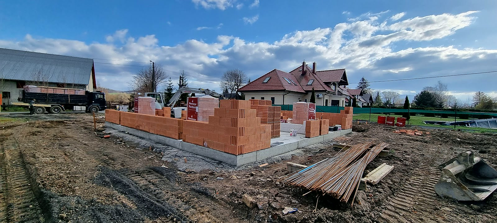
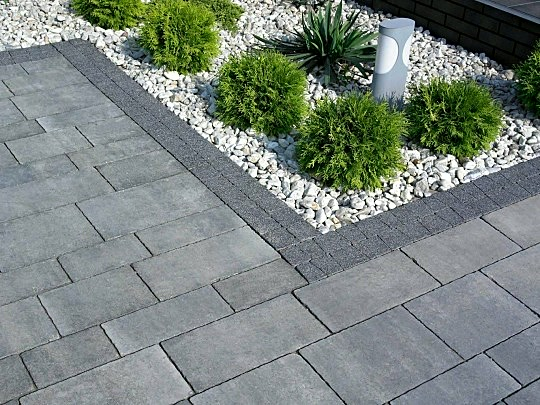
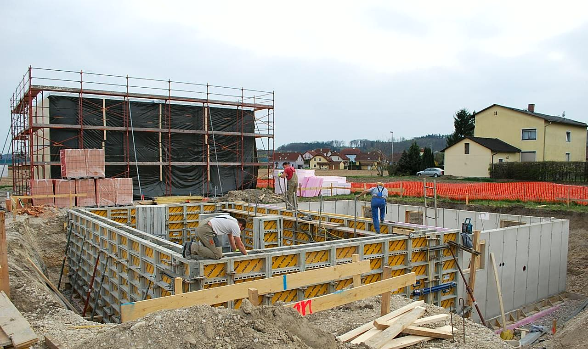

Budowa domów i remonty. Naczęsławice i okolice.
Budowa domów, stany surowe, remonty i wykończenia - od 13 lat w Naczęsławicach. Kosztorys dostajesz przed robotą, nie po.
Zadzwoń teraz +48 889 914 314- Bezpłatna wycena
- Dojazd: całe Opolskie
- Generalny wykonawca
„MK Bau to bardzo rzetelna firma budowlana, która wybudowała nasz dom do stanu deweloperskiego.”Dorota Varga
„Z całego serca polecam firmę MK Bau.”Mateusz Banach
„Pełen profesjonalizm, wszystko zgodnie z umową, czysto, sprawnie, terminowo i dokładnie.”Renata Kuchar
Wiesz, na czym stoisz - na każdym etapie
Od pierwszego telefonu do odbioru roboty - krok po kroku.
- 01
Rozmowa i oględziny
Telefon i krótka rozmowa o zakresie. Na oględziny przyjedziemy z miarką i notesem, nie z gotową umową do podpisu.
- 02
Kosztorys i umowa
Dostajesz kosztorys rozpisany na etapy i materiały oraz termin - wszystko na piśmie, zanim cokolwiek ruszy.
- 03
Budowa etapami
Robota idzie etapami z odbiorami - każdy zamykamy razem, zanim zaczniemy następny. Płacisz za to, co już stoi.
- 04
Odbiór i gwarancja
Przechodzimy robotę razem, punkt po punkcie. Usterki z przeglądu poprawiamy przed rozliczeniem końcowym, nie po nim.
Z ostatnich budów
Zdjęcia z naszych budów: domy jednorodzinne, fundamenty, więźby, kostka brukowa i hala stalowa. Fotografujemy też etapy, których po skończonej budowie nie widać - to one trzymają całość.





Zakres robót
Zakres prac, jaki robimy najczęściej - pełny opis i wycenę znajdziesz niżej.
- Budowa domówPrzez 13 lat postawiliśmy domy, w których dziś mieszkają całe rodziny - od prostych parterówek po piętrowe z poddaszem użytkowym.Wycena →
- Stany suroweFundamenty, ściany nośne, stropy, wieniec i więźba pod dach. Zbrojenie wiążemy według projektu i wołamy kierownika budowy na odbiór, zanim zalejemy beton - tego etapu nie da się poprawić po fakcie.Wycena →
- Remonty i modernizacjeStary dom po rodzicach albo mieszkanie z rynku wtórnego? Zanim podamy cenę, sprawdzamy, co naprawdę siedzi w ścianach i stropach - wilgoć, stare instalacje, krzywe podłogi.Wycena →
- Wykończenia wnętrzOdbierasz mieszkanie w stanie deweloperskim? Robimy wszystko do wprowadzenia: podłogi, drzwi, łazienkę, kolory ze wskazanej palety.Wycena →
- Elewacje i dociepleniaDocieplamy styropianem albo wełną - z klejem, siatką i tynkiem układanymi w reżimie technologicznym, bo elewacja robiona na skróty odpada płatami po kilku zimach.Wycena →
- Prace murarskie i tynkarskieŚciany działowe, kominy, murowane ogrodzenia, tynki maszynowe i tradycyjne.Wycena →
Co mówią klienci
MK Bau to bardzo rzetelna firma budowlana, która wybudowała nasz dom do stanu deweloperskiego. Cała inwestycja przebiegła bardzo szybko, bezproblemowo i zgodnie z umową.Dorota Varga
Z całego serca polecam firmę MK Bau. Firma bardzo rzetelna, od pierwszego dnia widać pełną fachowość.Mateusz Banach
Pełen profesjonalizm, wszystko zgodnie z umową, czysto, sprawnie, terminowo i dokładnie. Jesteśmy bardzo zadowoleni. Współpraca z Panem Marcinem to prawdziwa przyjemność.Renata Kuchar
Dojeżdżamy do Ciebie
Baza jest w Naczęsławicach, a budujemy w całym województwie opolskim - najczęściej w okolicy Pawłowiczek, Kędzierzyna-Koźla i Głogówka. Im większa robota, tym dalej się opłaca dojechać.
- Naczęsławice
- + okolice
Dobrze wiedzieć
Ile to będzie kosztowało?
Kosztorys rozpisujemy na etapy i materiały, więc widzisz, co ile kosztuje, i możesz zdjąć coś z listy, zanim podpiszemy umowę.
Czy wycena jest płatna?
Za obejrzenie placu i policzenie nie bierzemy pieniędzy. Płacisz za robotę, nie za kosztorys.
Kiedy możecie zacząć?
Mniejsze roboty wchodzą między etapami większych budów - czasem szybciej, niż się spodziewasz. Start budowy domu ustawiamy pod sezon i pogodę.
Czy dostanę umowę i fakturę?
Tak, jedno i drugie. Umowa opisuje zakres, cenę, terminy i gwarancję, a fakturę dostajesz za każdy rozliczony etap.
Kto załatwia materiały?
Zwykle my - mamy sprawdzone hurtownie i rabaty wykonawcy, a wszystkie faktury zakupu widzisz. Wolisz kupić coś samodzielnie? Podamy ilości i parametry, żebyś nie przepłacił.
Co, jeśli po robocie coś się odezwie?
Pęknięcie na ścianie czy rysa przy oknie po roku to sprawa do naprawy, nie do dyskusji. Nasza robota - nasza poprawka, bez kombinowania.
Potrzebujesz fachowca? Wycenimy za darmo.
Jeden telefon i przyjedziemy zobaczyć zakres. Wycena nic nie kosztuje.